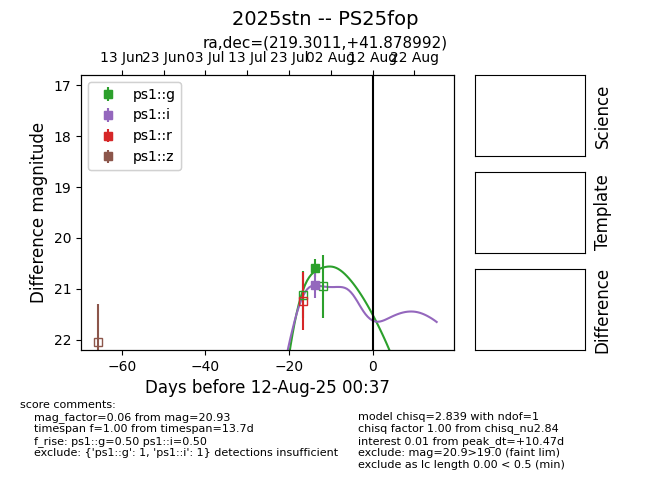

Target 2025stn at 2025-08-12 02:49, see:
TNS: wis-tns.org/object/2025stn
YSE: ziggy.ucolick.org/yse/transient_detail/2025stn
alt names
2025stn (yse,tns)
PS25fop (panstarrs)
coordinates:
equatorial (ra, dec) = (219.3011,+41.87899)
galactic (l, b) = (74.1211,+63.86029)
photometry
last ps1::g=20.58, ps1::i=20.93
1 ps1::g, 1 ps1::i detections
